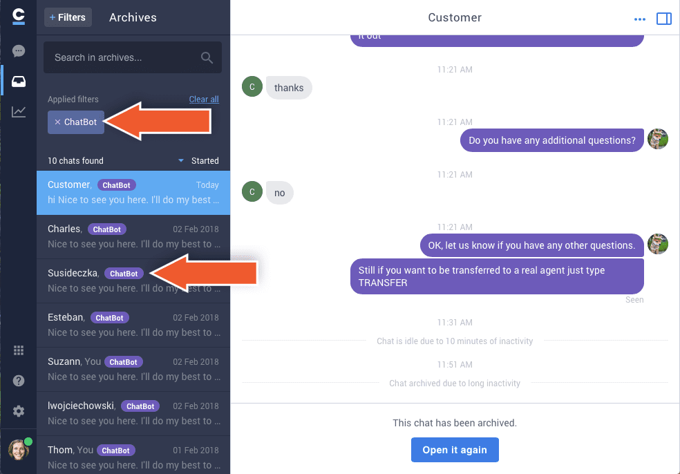
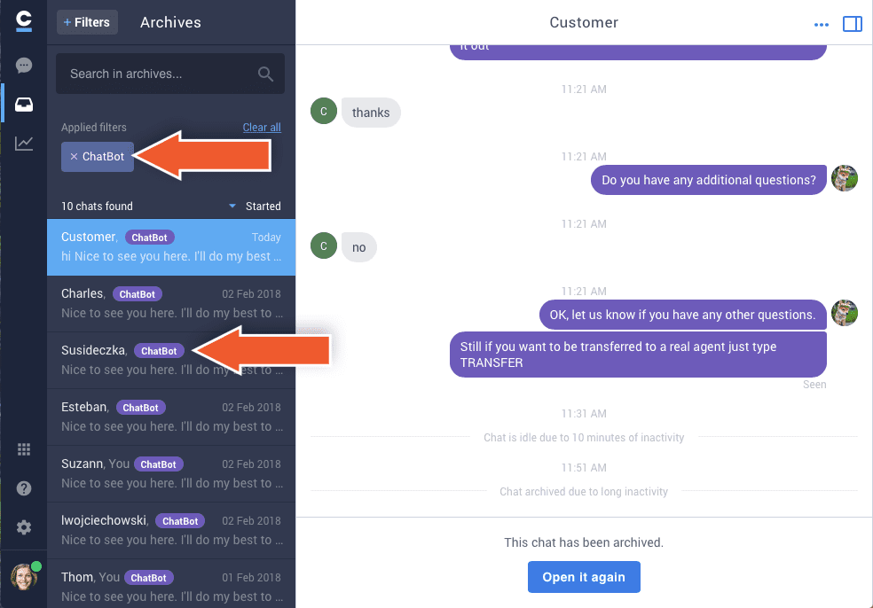

Chat.io is a comprehensive intelligent platform that helps you to provide the highest customer service experience. Integrate chat.io with BotEngine to automate common cases and never let your clients wait for help.
Key advantages
- provides 24⁄7 customer service
- filters out incoming spam chats
- manages many simple cases at the same time
- answers instantly - your clients won’t wait anymore!
How does the chat.io integration work
- When the bot isn’t able to answer questions, you can set the chat transfer to human agents.
- Use rich messages in bot responses. See the list of compatible integrations here.
- Returning customers are always assigned to available human agents.
- Human agents can step in and join and take over chats handled by the bot.
How to integrate your bot with chat.io
- First, you need the chat.io account. If you haven’t created one, go to https://www.chat.io/ and set up your new account. Also, you can find there extensive documentation and guidebooks to get started with the app.
- When your account is ready, return to your BotEngine account. Note, that you can also create a new BotEngine account using your chat.io details.
- Decide the story that you want to integrate with your chat.io account. You can either create a new one or integrate an existing scenario.
- Go to the integrations section and select chat.io.
- Log in to your chat.io account.
- Select the story and click Create bot.
- Now you can configure and customize your bot.
- Routing priority - decide which chats go to the bot and which are directed to your human agents. The bot can take all incoming chats, work only when your agents are offline or become one of them.
- Bot agent name - name your bot
- Set the bot avatar - paste an avatar URL to give your bot a unique look.
- Click Confirm to create the bot.

- You have successfully integrated your story with chat.io. Remember that you can always use the toggle to enable and disable the bot agent or completely remove the integration.
To view all the your bot agent’s chats, go to assigned to others section in Chats and in Archives.
How to use the chat.io integration
To see your bot’s ongoing chats, go to the assigned to others section.
 Send a public reply to join your bot’s ongoing chat. You can leave private notes, that are invisible to the client and don’t mute the bot. Use the toggle located in the upper right corner to manually disable and enable the bot in this chat.
You can view the performance of your bot in the archives. Search all chats by the bot’s name, label or use filters to narrow the results.

Send a public reply to join your bot’s ongoing chat. You can leave private notes, that are invisible to the client and don’t mute the bot. Use the toggle located in the upper right corner to manually disable and enable the bot in this chat.
You can view the performance of your bot in the archives. Search all chats by the bot’s name, label or use filters to narrow the results.
